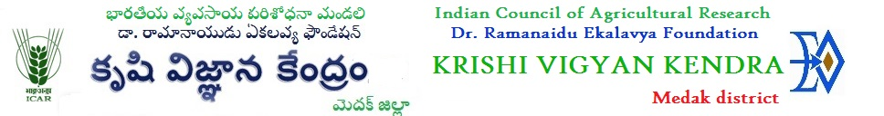

kvkmedak2@gmail.com
75690 39441 (Madhukar K, Office Assistant)

Home
About
Vision | Mission | Mandate
District Information
Focus & Development Thrust
Mandated Activities
On Farm Testing
Front Line Demonstrations
Capacity Building - Trainings
Extension Activities
Bio Inputs prodcution
Seeds, Plantating materials
Facilities
Infrastructure Facilities
Demo Units Facilities
Training Facilities
Gallery
Our Team
Careers
Contact us
Nursery Unit
Mixed Fodder Unit
VAM Production Unit
Cow Unit
Vermi Compost Unit
Bee Rearing Unit
Roof Top Garden Unit
Composite Fish Culture
Slatted Floor Goat Rearing Unit
Poultry Unit
Dish Type Vegetable Unit
Vertical Type Vegetable Unit
Ethno-Veterinary Garden
Watershed Miniature Model
Mushroom Production Unit
Azolla Production Unit